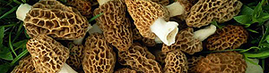

Elsässer Spargel mit Morcheln
6 von 6der spargel schälen und nicht mehr als 10 min kochen. mit lauwarmem wasser abkühlen.
frische morcheln mit dem messer ein wenig säubern und in streifen schneiden. eine frühlingszwiebel, knoblauch
und die morcheln in viel butter andünsten. mit sherry ablöschen und ein wenig gemüsefond beigen, einkochen.
Ein spritzer rahm beigeben sowie pfeffer und salz. vor dem servieren petersilie und das grün der zwiebel und beigeben.
